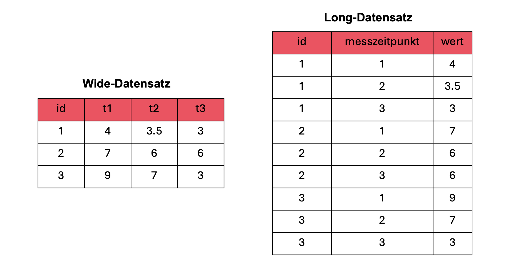
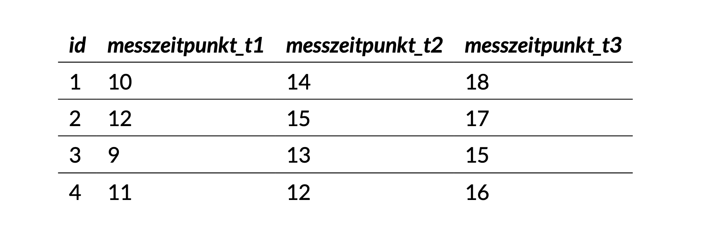
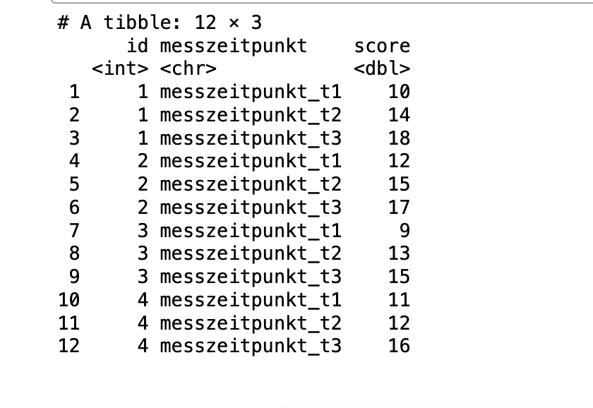
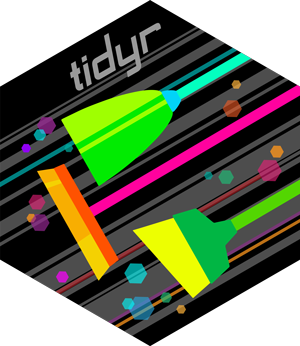
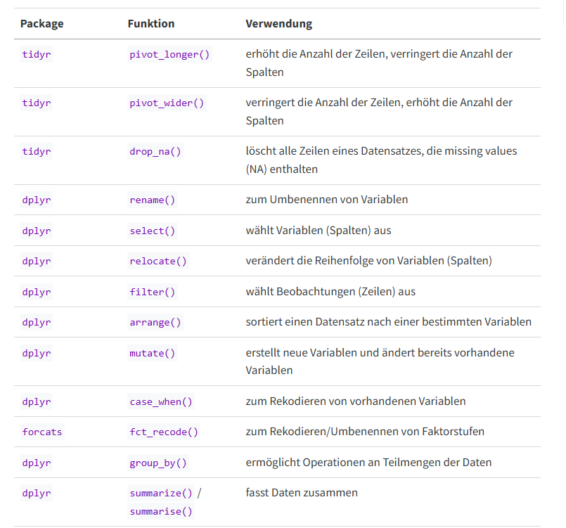
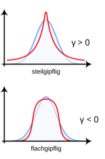
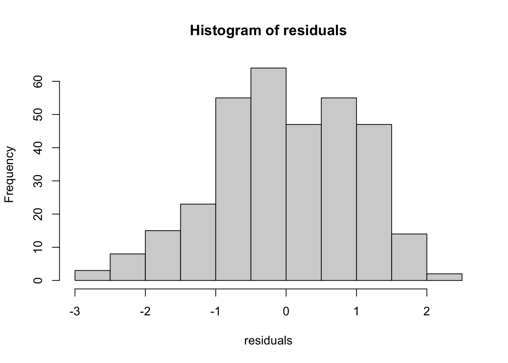
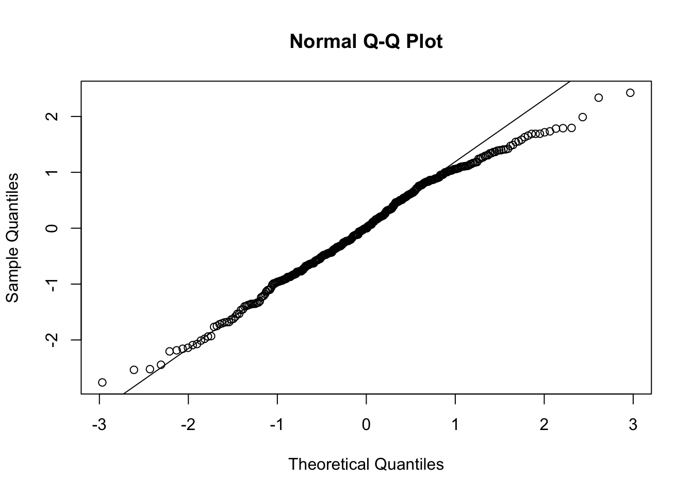
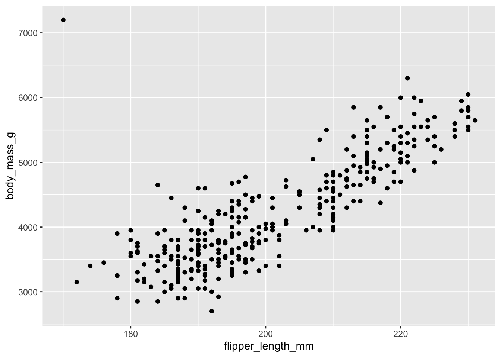
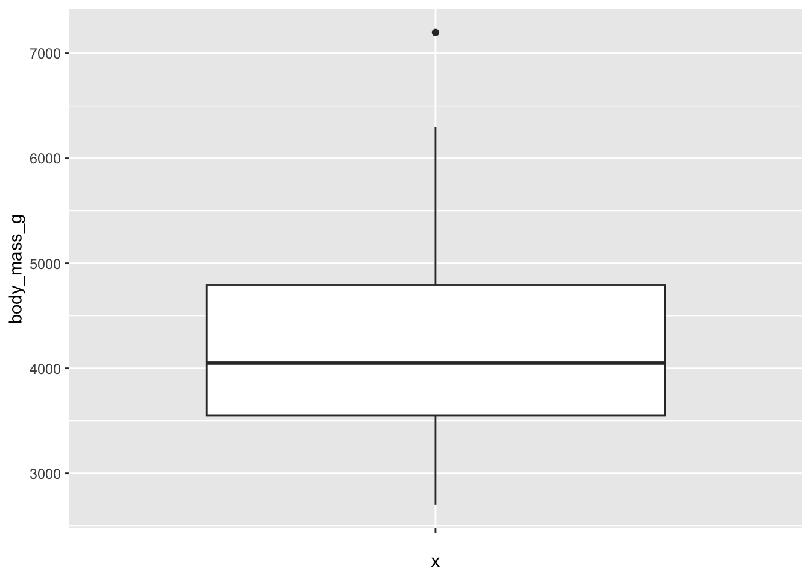

df_wide <- data.frame(
id = 1:4,
messzeitpunkt_t1 = c(10, 12, 9, 11),
messzeitpunkt_t2 = c(14, 15, 13, 12),
messzeitpunkt_t3 = c(18, 17, 15, 16)
)R u Ready? FS2026 | Psychologie der Digitalisierung - Einheit 9
R u Ready? Reproduzierbare Datenaufbereitung und -analyse mit R
FS 2026
LV-Leitung: Dr. Sandra Grinschgl / MSc. Laura Hirt
Tutor: BSc. Lars Schilling
9. Einheit, 22.04.2026
Heute:
Fragen zu Hands On Block 4?
Neue Variablen im Codebook ergänzen bzw. anpassen

mmq_mean & Pre Ratings
Genzplyr 💅
Falls euch die dplyr() Funktionen zu Öde sind 😄genzplyr - Hadley Wickham
Info: Masterarbeiten zu vergeben!
Inhalte heute
1. Daten strukturieren
Wide- vs. Long-Format verstehen
Daten gezielt transformieren
2. Datenqualität prüfen
Verteilungen beurteilen (Schiefe, Kurtosis)
Ausreisser erkennen
Skalenreliabilität einschätzen
Wie können Daten organisiert sein?
Zwei typische Formate:
Wide Format
Long Format
👉 Beide enthalten die gleichen Informationen – aber unterschiedlich strukturiert.
Wide vs. Long

Wide: eine Zeile = eine Person
Long: eine Zeile = eine Messung
Warum ist das Datenformat entscheidend?
Viele statistische Analysen erwarten Long Format
Jede Zeile = eine Beobachtung
notwendig bei mehreren Messzeitpunkten pro Person
Beispiel: Veränderung über die Zeit
Person 1: T1 → T2 → T3
Person 2: T1 → T2 → T3
→ Jede Messung muss eine eigene Zeile sein
Wide to Long Tranformation:
Messzeitpunkte werden untereinander statt nebeneinander angeordnet
Die ID wird für jede Messung wiederholt
Ergebnis: eine Zeile = eine Messung

Transformation: Wide → Long
Wie müssen wir den folgenden Datensatz transformieren, um ihn ins Long Format zu bekommen?
| id | messzeitpunkt_t1 | messzeitpunkt_t2 | messzeitpunkt_t3 |
|---|---|---|---|
| 1 | 10 | 14 | 18 |
| 2 | 12 | 15 | 17 |
| 3 | 9 | 13 | 15 |
| 4 | 11 | 12 | 16 |
Wide → Long mit pivot_longer()
Zentrale Argumente:
cols: Welche Spalten werden gestapelt?names_to: Name der neuen Variable (z.B. Messzeitpunkt)values_to: Neue Variable für die Werte
df_long <- df_wide |>
pivot_longer(
cols = starts_with("messzeitpunkt_t"),
names_to = "messzeitpunkt",
values_to = "score"
)
df_long# A tibble: 12 × 3
id messzeitpunkt score
<int> <chr> <dbl>
1 1 messzeitpunkt_t1 10
2 1 messzeitpunkt_t2 14
3 1 messzeitpunkt_t3 18
4 2 messzeitpunkt_t1 12
5 2 messzeitpunkt_t2 15
6 2 messzeitpunkt_t3 17
7 3 messzeitpunkt_t1 9
8 3 messzeitpunkt_t2 13
9 3 messzeitpunkt_t3 15
10 4 messzeitpunkt_t1 11
11 4 messzeitpunkt_t2 12
12 4 messzeitpunkt_t3 16notwendig für dat_full um 2x3 ANOVA zu berechnen
Wide → Long mit pivot_longer()


Umgekehrter Fall: Long → Wide mit pivot_wider()
👉 Daten wieder in eine übersichtlichere Tabellenform bringen
Zentrale Argumente:
names_from: Werte aus dieser Spalte (messzeitpunkt) werden wieder zu Spaltennamenvalues_from: Werte aus dieser Spalte (score) füllen die neu entstandenen Spalten
df_wide_again <- df_long |>
pivot_wider(
names_from = messzeitpunkt,
values_from = score
)
df_wide_again# A tibble: 4 × 4
id messzeitpunkt_t1 messzeitpunkt_t2 messzeitpunkt_t3
<int> <dbl> <dbl> <dbl>
1 1 10 14 18
2 2 12 15 17
3 3 9 13 15
4 4 11 12 16Paket tidyr

pivot_longer() und pivot_wider() stammen aus dem Paket tidyr → Teil des tidyverse
Umgang mit fehlenden Werten: drop_na(), replace_na() stammen auch aus tidyr
Wichtige Funktionen für die Datenaufbereitung:
aus Einführung in R, Kapitel 4.1

Hands On!
Code korrigieren / verbessern
Long Transformationen
Datenqualität:
- Schiefe (Skewness)
- Wölbung (Kurtosis)
- Normalverteilung der Residuen
- Ausreisseranalyse
- Skalenreliabilität
👉 Datenqualität bestimmt die Qualität der Ergebnisse
Paket: psych
psych sollte aus Diagnostik bekannt sein. Beinhaltet zb. Funktionen zu Schiefe, Kurtosis, Reliabilität
1. Schiefe (Skewness)
Funktion skew()
- beschreibt die Asymmetrie der Verteilung
👉 rechtsschief (linkssteil): Die meisten Werte liegen links (klein), einige wenige hohe Werte ziehen die Verteilung nach rechts
👉 linksschief (rechtssteil): Die meisten Werte liegen rechts (hoch), einige wenige niedrige Werte ziehen die Verteilung nach links
#/media/Datei:Rechtsschief.svg){kind=link}
2. Wölbung (Kurtosis)
Funktion kurtosi()
- beschreibt die Form der Verteilung
👉 steilgipflig: viele Werte nahe am Mittelwert
👉 flachgipflig: breitere Verteilung

Kurtosis: Je kleiner der Wert, desto flacher ist die Kurve, je höher, desto steiler. Negative Werte sind dabei nicht möglich. Eine Normalverteilung hat eine Kurtosis von 3.
Eine Schiefe nahe 0 und eine Kurtosis von etwa 3 sprechen für eine Normalverteilung. Statt der Kurtosis wird oft der Exzess betrachtet. Dabei wird von der Kurtosis der Wert 3 abgezogen, sodass eine Normalverteilung den Wert 0 hat. Werte < 0 sprechen für einen im Vergleich zur Normalverteilung flacheren, Werte > 0 für einen steileren Verlauf
3. Normalverteilung der Residuen
- Voraussetzung für viele statistische Tests
Formen der Überprüfung:
Visuelle Verfahren: z.B. QQ-Plot
Formale Tests: z.B. Shapiro-Wilk –> “veraltete” Methode, zu konservativ bei grossen Stichproben
3. Normalverteilung der Residuen
👉 Ein Residuum ist die Differenz zwischen beobachtetem und vorhergesagtem Wert (Vorhersageabweichung)
model_1 <- lm(body_mass_g ~ bill_length_mm + sex, data = penguins)
residuals <- rstandard((model_1))
hist(residuals)
Ein Residuum beschreibt, wie stark sich ein tatsächlicher Wert von dem Wert unterscheidet, den unser mathematisches Modell vorhersagt.
Wenn wir zum Beispiel einen Wert vorhersagen und die Beobachtung ist etwas höher oder tiefer, dann ist genau diese Differenz das Residuum.
Gute Modelle haben tendenziell kleine Residuen – das heisst, ihre Vorhersagen liegen nahe an den tatsächlichen Werten.
Für viele statistische Verfahren ist es wichtig, dass diese Residuen zufällig verteilt sind und ungefähr einer Normalverteilung folgen.
3. Visuelle Form der Überprüfung: QQ-Plot
Zweck: QQ-Plots prüfen, ob die Daten einer theoretischen Verteilung (z. B. Normalverteilung) folgen.
X-Achse: Theoretische Quantile
Y-Achse: Beobachtete (empirische) Datenquantile
qqnorm(residuals)
qqline(residuals)
Der QQ-Plot und das Histogramm zeigen, dass die Residuen insgesamt nahe an einer Normalverteilung liegen, jedoch im linken Extrembereich etwas mehr Werte (heavy tail) und im rechten Extrembereich etwas weniger Werte (light tail) aufweisen. Diese Abweichungen sind gering, sodass parametrische Analysen weiterhin angemessen sind.
4. Ausreisser
👉 Ausreisser sollten vor der Analyse klar definiert werden (z.B. Präregistrierung / Datenanalyseplan)
Mögliche Kriterien:
Werte ausserhalb von ± SD vom Mittelwert
Visuelle Ausreisser in Boxplots und/oder Scatterplots
Wichtig:
👉 Extreme Werte nicht unüberlegt entfernen!
Die Entscheidung hängt von Kontext und Fragestellung ab
Mehr dazu in Leys et al. (2019)
4. Ausreisser
Streudiagramme/Scatterplots
ggplot(data = penguins_dropped, aes( x = flipper_length_mm, y = body_mass_g))+
geom_point()
4. Ausreisser
boxplot
ggplot(penguins_dropped, aes(x = "", y = body_mass_g)) +
geom_boxplot()
„Ein Ausreißer ist ein Wert, der stark von den übrigen Daten abweicht.
Wichtig ist: Ein solcher Wert kann verschiedene Ursachen haben.
Manchmal handelt es sich um Fehler – zum Beispiel falsche Eingaben oder Messprobleme. In solchen Fällen kann es sinnvoll sein, den Wert zu entfernen.
In anderen Fällen ist der Wert jedoch real und gehört zur Population – er ist einfach selten oder extrem. Dann sollte er nicht einfach gelöscht werden, da er wichtige Informationen enthalten kann.
Deshalb gilt:
👉 Man muss immer prüfen, warum ein Wert auffällig ist – und nicht nur, dass er auffällig ist.“
Beispiel:
Ein Pinguin, der von Menschen gefüttert wurde und deshalb ungewöhnlich schwer ist, könnte tatsächlich nicht mehr gut zur Zielpopulation passen.
ABER: Ein besonders großer oder schwerer Pinguin innerhalb der natürlichen Variation wäre hingegen kein Fehler, sondern ein echter Extremwert.
4. Interpretation von Ausreissern
Ausreisser können unterschiedliche Ursachen haben:
Messfehler oder falsche Daten → prüfen und ggf. entfernen
Seltene, aber reale Beobachtungen → behalten
👉 Nicht jeder extreme Wert ist ein Ausreisser!
5. Skalenreliabilität
Was bedeutet Skalenreliabilität?
Mehrere Items einer Skala sollen dasselbe Konstrukt messen
- Beispiel: Skala zur Extraversion
→ „Ich bin gesellig“
→ „Ich gehe gerne auf andere zu“
→ „Ich fühle mich in Gruppen wohl“
Zentrale Frage:
👉 Messen diese Items wirklich das Gleiche?
Idee:
Wenn Items gut zusammenpassen → hohe Reliabilität
Wenn Items unterschiedlich sind → niedrige Reliabilität
5. Skalenreliabilität: Cronbach’s Alpha
→ Wichtiger Wert: raw_alpha (hier: 0.76)
⚠️ Hinweis: Cronbach’s Alpha wird typischerweise für Skalen mit mehreren Items berechnet (hier nur 2 Items → eingeschränkte Aussagekraft)
bfi_10_extra <- bfi_10_data |>
select(bfi_extra_1_r, bfi_extra_2)
psych::alpha(bfi_10_extra, check.keys = TRUE)
Reliability analysis
Call: psych::alpha(x = bfi_10_extra, check.keys = TRUE)
raw_alpha std.alpha G6(smc) average_r S/N ase mean sd median_r
0.76 0.76 0.62 0.62 3.2 0.085 3 1 0.62
95% confidence boundaries
lower alpha upper
Feldt 0.5 0.76 0.89
Duhachek 0.6 0.76 0.93
Reliability if an item is dropped:
raw_alpha std.alpha G6(smc) average_r S/N alpha se var.r med.r
bfi_extra_1_r 0.54 0.62 0.38 0.62 1.6 NA 0 0.62
bfi_extra_2 0.71 0.62 0.38 0.62 1.6 NA 0 0.62
Item statistics
n raw.r std.r r.cor r.drop mean sd
bfi_extra_1_r 29 0.89 0.9 0.71 0.62 3 1.1
bfi_extra_2 29 0.92 0.9 0.71 0.62 3 1.2
Non missing response frequency for each item
1 2 3 4 5 miss
bfi_extra_1_r 0.07 0.24 0.41 0.17 0.10 0.03
bfi_extra_2 0.10 0.28 0.28 0.21 0.14 0.035. Skalenreliabilität: Weitere Formen der Reliabilität
Alternatives Mass der internen Konsistenz
- McDonalds Omega (Alternative zu Cronbach’s Alpha)
Weitere Reliabilitätsarten:
- Test-Retest Reliabilität: → Stabilität über die Zeit
- Split-half Reliabilität: → Konsistenz zwischen Itemhälften
Mehr Infos dazu: Psychometrics in R & Björn Walther
In diesem Beispiel werden nur zwei Items verwendet - wir gehen davon aus dass bfi_extra_1_r schon rekodiert wurde. Anonsten könnte man das auch im alpha befehl weiter spezifizieren.
Heute haben wir:
Wide to long Transformationen gemacht - You mastered the tidyr!

Datenqualitätsindikatoren kennengelernt
Bis nächste Woche
- Muddiest Points Umfrage bis Sonntag 23:55
- Bei weiteren Fragen zu den bisherigen Inhalten: Forum nutzen & Lars kontaktieren
Optional / Empfehlung
- Keine HÜ → Nutzt die Zeit, um Inhalte zu vertiefen oder nachzuholen
References
Leys, Christophe, Marie Delacre, Youri L. Mora, Daniël Lakens, and Christophe Ley. 2019. “How to Classify, Detect, and Manage Univariate and Multivariate Outliers, with Emphasis on Pre-Registration.” International Review of Social Psychology 32 (1). https://doi.org/10.5334/irsp.289.